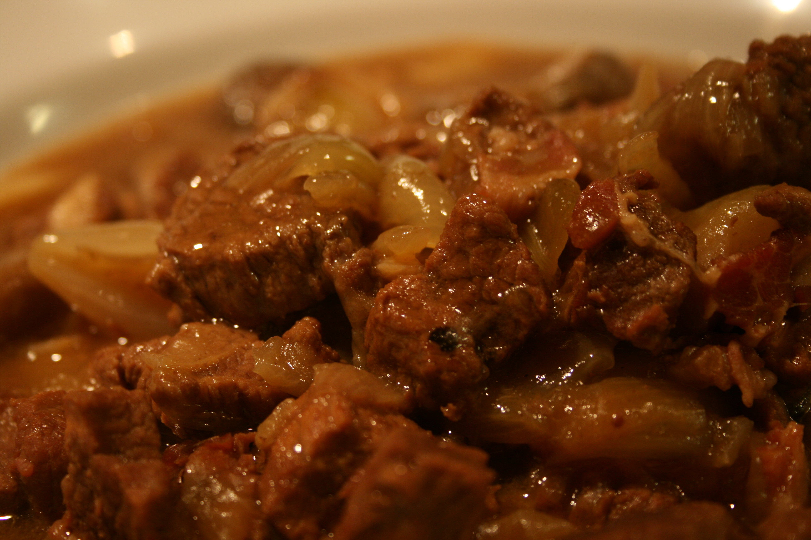

Beef in Beer

Ingredients
- 500g of Cheap Beef Pieces (Stewing steak usually is cheap)
- 500 Mls of Real Ale
- 4 Large Onions
- 2 Fat Cloves of Garlic
- Tbsp of Plain flour
Methods
- Raw beef, roll it in the flour fry 4 ‐ 5 pieces at a time in a hot saucepan to seal put to one side when all done cut the onions into quarters fry in the same frying pan as the beef to soak up the juices.
- Towards the end of frying the onion (they should be nicely brown round the edges) throw in the smashed up cloves of garlic.
- Transfer the beef, onions, garlic to a deep casserole dish. Stir in the remaining flour pour on the bottle of beer - really, it isn't going to be wasted!
- Cover, and cook at 150 for about 2 and a half hours will be gorgeous when it comes out, trust me...serve with mash.